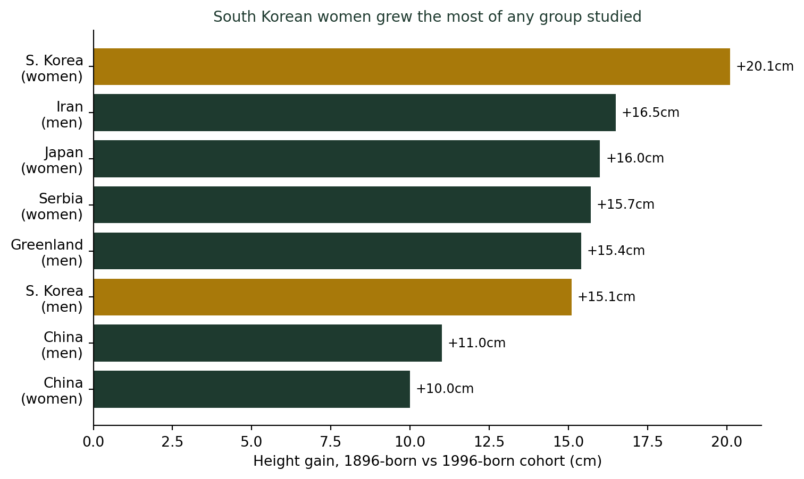
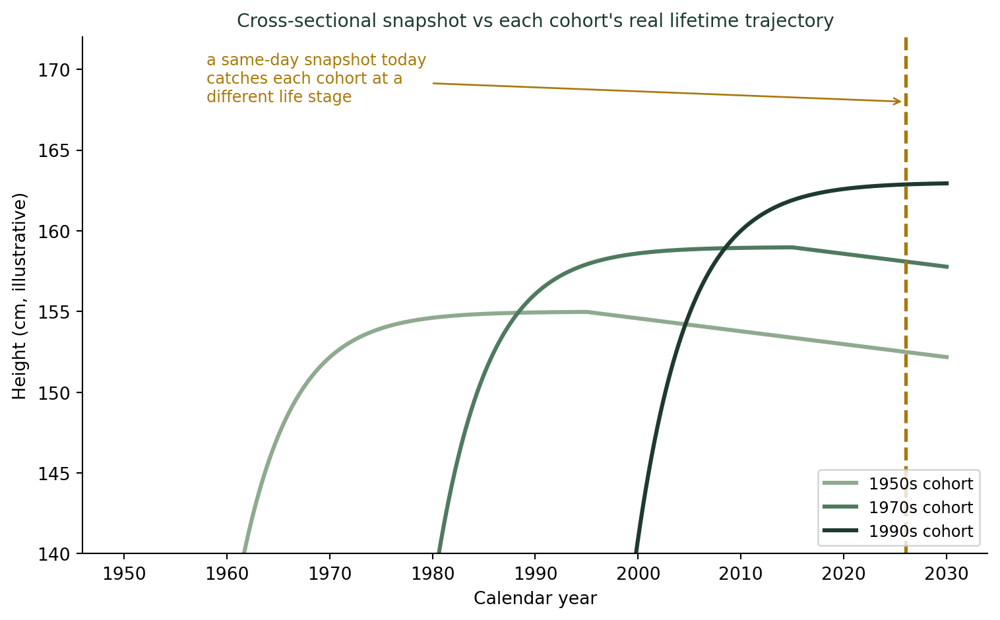

(기록의 착시, 대표값의 재발견) 세대별 평균이 말해주는 진짜 의미 — 평균 키가 자라는 이유
통계기초
기술통계
2016년 국제 연구는 1896년생과 1996년생 한국 여성의 평균 키를 비교해, 100년 만에 20.1㎝가 자랐다는 세계 1위 기록을 발표했다. 유전자가 100년 만에 바뀌었을 리는 없다. 이 ’평균’이 실제로 어떻게 만들어졌는지 — 그리고 같은 통계를 잘못 읽으면 어떤 착시에 빠지는지를 살펴본다.
100년 만에 20.1㎝, 세계에서 가장 빨리 자란 키
2016년 임페리얼 칼리지 런던의 마지드 에자티(Majid Ezzati) 교수팀이 이끄는 국제 공동연구(NCD-RisC)는 전 세계 200개국 1,800만 명의 신장 자료를 분석해 국제학술지 eLife에 결과를 발표했다. 1896년생과 1996년생, 즉 100년의 격차를 둔 두 세대의 성인 평균 키를 비교한 것이었는데, 이 연구에서 가장 극적인 변화를 보인 집단은 한국 여성이었다. 142.2㎝에서 162.3㎝로, 100년 만에 20.1㎝가 자랐다 — 조사 대상 200개국 어느 나라·성별보다 큰 폭이었다. 한국 남성도 159.8㎝에서 174.9㎝로 15.1㎝ 자라 상위권에 들었다.
100년이면 사람의 유전자가 바뀌기엔 턱없이 짧은 시간이다. 그런데도 평균 키가 이렇게 크게 움직였다는 건, 이 “평균”이라는 숫자가 유전이 아니라 영양·보건 환경의 변화를 담고 있다는 뜻이다. 여기서 통계적으로 흥미로운 질문이 하나 생긴다. 이 연구자들은 도대체 어떻게 “1896년생의 평균 키”와 “1996년생의 평균 키”를 각각 잰 걸까?
이 평균은 “코호트”를 추적해서 만든 것이다
답은 이렇다. 연구팀은 특정 하루에 온갖 나이대 사람을 모아 한꺼번에 잰 게 아니다. 같은 해에 태어난 사람들(코호트, cohort)이 성인이 되었을 때(대략 18세 전후) 측정된 키 기록을, 태어난 연도별로 묶어 비교했다. 1896년생이 성인이 된 1910년대의 기록과, 1996년생이 성인이 된 2010년대의 기록을 나란히 놓은 것이다. 즉 “다 자란 성인끼리, 태어난 해만 다르게” 비교한 셈이다.
이 방식이 왜 중요한지는, 반대로 이렇게 하지 않았을 경우를 상상해보면 분명해진다. 만약 연구팀이 오늘 하루 20대부터 80대까지 모든 연령대 한국인의 키를 한꺼번에 재서 “세대별 평균”이라고 발표했다면 어떻게 됐을까?

세 곡선은 실제 자료가 아니라 원리를 보여주기 위한 단순화된 모형이다. 각 세대는 성장기(20세 전후까지 상승)와 성인기 정체 구간을 거친 뒤, 중년 이후에는 척추 디스크 압축과 골밀도 감소 등으로 서서히 키가 줄어든다 — 이는 널리 알려진 노화의 자연스러운 현상이다. 금색 점선으로 표시한 “오늘”이라는 한 시점에서 세 세대를 동시에 관찰하면, 1950년대생은 이미 정점을 지나 줄어드는 구간에서, 1990년대생은 한창 정점에 있는 구간에서 붙잡힌다. 이 둘의 키 차이에는 진짜 세대 간 성장 차이(코호트 효과)와 같은 사람이 나이 들며 겪는 변화(연령 효과)가 뒤섞여 있다. NCD-RisC 연구가 굳이 “각 세대가 성인이 된 시점”을 기준으로 맞춰 비교한 이유가 바로 이 혼입을 피하기 위해서다.
세대 비교 통계를 읽을 때 확인할 것
- 비교 시점이 맞춰져 있는가? “오늘 여러 세대”를 비교하는지, “각 세대가 같은 나이였을 때”를 비교하는지에 따라 결론이 달라진다.
- 평균 뒤에 숨은 표본 구성이 바뀌지 않았는가? 지난 챕터에서 다룬 우리 반 평균 이야기처럼, 비교 대상 집단의 구성 자체가 달라지면 개인의 변화 없이도 평균은 움직인다.
- “평균이 변했다”가 곧 “개인이 변했다”를 뜻하지는 않는다. 세대 평균 키가 올랐다고 해서 특정 개인이 부모보다 반드시 크다는 뜻은 아니다. 평균은 집단의 요약값일 뿐이다.
더 깊이: 횡단 자료와 종단 자료
강의노트 〈기초통계학 1. 자료의 이해 — 횡단 자료 vs. 종단 자료〉는 특정 시점에 여러 개체를 한 번에 조사하는 횡단 자료(cross-sectional data)와, 동일 개체·현상을 시간 흐름에 따라 추적하는 종단 자료(time series / longitudinal data)를 구분한다. 오늘 살펴본 세대별 키 비교의 함정은 정확히 이 구분과 맞닿아 있다. “오늘 하루 여러 연령대”를 재는 건 횡단 자료이고, “같은 나이가 됐을 때의 여러 세대”를 재는 건 세대(코호트)를 축으로 한 비교다. NCD-RisC 연구가 신뢰할 만한 이유는, 나이라는 변수를 성인기 시점으로 통제해 코호트 간 비교가 순수하게 “태어난 해”의 차이만 반영하도록 설계했기 때문이다.
결론: 평균은 무엇을, 언제, 누구와 비교했는지에 달려 있다
나는 학생들에게 “평균 키가 커졌다”는 뉴스를 보여줄 때마다 이렇게 묻는다. “이 평균은 누구를, 언제 잰 걸까?” 100년 만에 20.1㎝라는 숫자는 분명 진짜다 — 한국의 영양과 보건 환경이 그만큼 극적으로 좋아졌다는 증거다. 하지만 이 숫자가 설득력을 갖는 이유는 크기 자체가 아니라, 같은 나이의 사람들끼리, 태어난 해만 다르게 비교했다는 방법론에 있다. 세대 간 평균을 비교하는 통계를 마주하면, 그 평균이 정확히 무엇을 무엇과 맞춰 비교한 것인지부터 확인하는 습관이 필요하다.
참고 자료
- Bentham, J. et al. (NCD Risk Factor Collaboration, 2016). A century of trends in adult human height. eLife, 5:e13410.
- 한국 여성 평균키 162.3㎝… 100년새 20㎝ 커져 세계1위 — 한국일보